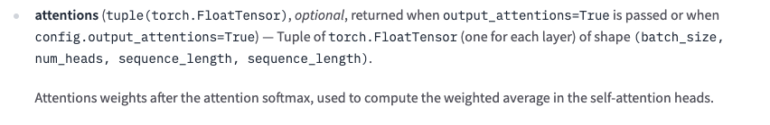
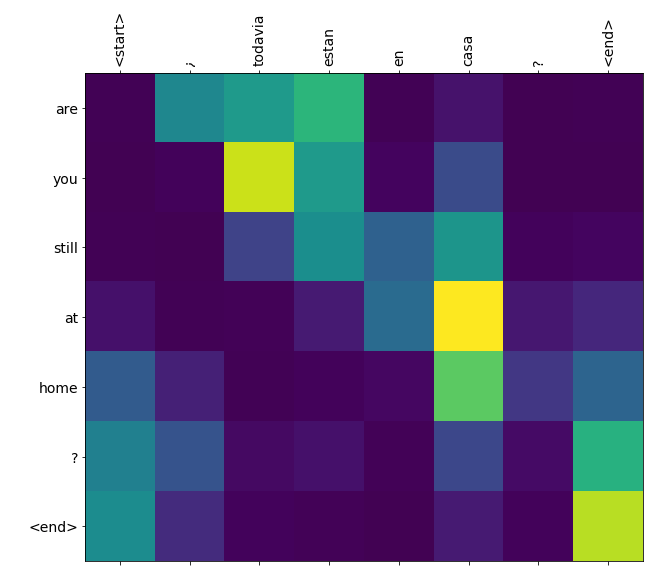
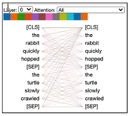
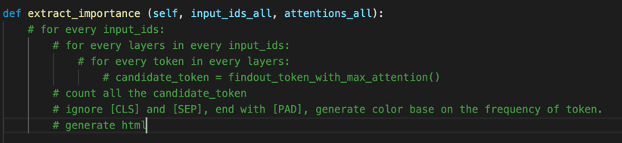
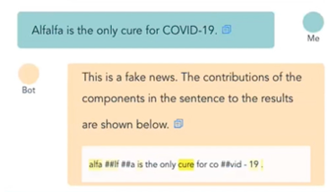
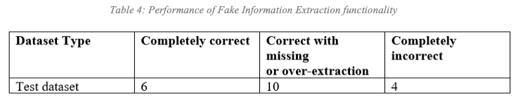

An idea to extract fake parts of fake news
This problem occurred when we were trying to improve a Chatbot user experience. This chatbot is a coursework that supports covid-related Q&A, fake tweet recognition, and rapid diagnosis of covid by cough. For more details refer to the project repo.
When doing the practice module of NLP course, we intend to do a recognition for fake news on Twitter about Covid-19. The teacher then suggested that instead of just identifying fake news, we could try to figure out which parts of a tweet hold the fake facts.
We have fine-tuned a BERT model and obtained its attention output. These steps are easy and there is a lot of information on the web. But how to infer which parts of the original text are fake and which parts are real from the attention data is a very specific problem, I can’t find any similar solution on the Internet. And there is even no available code example for attention visualization of any text classification problem.
So after reading various materials and combining bert-viz and my own understanding, this idea occurs to me to extract the most important part of a BERT model classification result and it performs not bad. Now let me start to introduce.
Idea of extracting fake part by attention visualization
The most basic idea is that we believe that the fake parts of a tweet is the parts that has the greatest impact on the fake recognition result, that is, the parts with the highest weight in the model attention output. So our problem becomes, how to find the parts with the largest weight from the attention.
Understand the attention output
放huge face的transformer 文档，解释transformer的attention输出的结构。
然后参考bert-viz这个可视化，理解可视化是在做什么
To find the parts with the largest weight, we need to understand the data structure of attention output first. The pre-trained BERT we use is from huggingface and here is the document of the classifier.
According to their document, the output attention has 4 dimentions which represent batch_size, num_heads, sequence_length and sequence_length separately.

Now that we have the data, how do we visualize it? One of the most common, and the simplest, is grayscale. A typical grayscale image visualization attention is as follows.

Obviously this kind of attention results that can only show one layer. Of course, we can also do statistics to each layer, get a final result, and then finally display it. Another common way to do the visualization is implemented by bert-viz.

But all these methods to do the visualization is very user unfriendly obviously. As a function of a chatbot, we hope that after the user enters text, we can directly give the result of whether it is fake news, and at the same time highlight the fake part.
Pseudocode
Here is my final pseudocode.

And here is what it looks like in our chatbot.

Example code
The complete code and runnable example can be accessed in colab. It should be noted that the following code only uses the first layer of attention data for convenience. If you want to count all the attention, you should add a traversal of attention layers.
1 | import torch |
Evaluation and performance
In our scenario, this visualization method is also the interpretation of the model results, which can only be evaluated by human exports. With the help of a search engine, I’m an expert. I randomly selected twenty pieces of test data, and manually read and evaluated the effects of fake parts exports.
I divided the results into three labels, completely correct, correct with missing or over extraction and completely incorrect. As a result, 80% of them could find the relative fake part and 30% of them do a perfect job.
